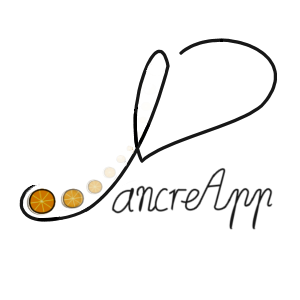
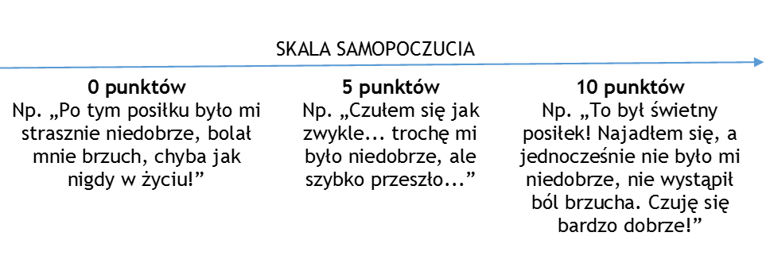

PancreApp = Innowacyjne oprogramowanie dedykowane pacjentom z przewlekłymi chorobami gastroenterologicznymi.
Proponujemy Państwu udział w BEZPŁATNYM BADANIU KLINICZNYM pt. PancreApp realizowanym przez Wydział Lekarski Uniwersytetu Medycznego w Łodzi. Badanie polega na testowaniu innowacyjnego oprogramowania "PancreApp" przez 3 tygodnie. Głownym zadaniem oprogramowania jest indywidualizacja zaleceń żywieniowych oparta tylko i wyłącznie o Państwa osobiste doświadczenia w przebiegu choroby. Całe badanie jest objete finansowaniem w ramach programu "Generacja Przyszłości" Ministerstwa Nauki i Szkolnictwa Wyższego RP.

Czym jest PancreApp?
PancreApp to innowacyjne, przyjazne użytkownikowi oprogramowanie, które pozwoli Panu/i nie tylko odkryć siebie, ale przede wszystkim samodzielnie określać indywidualne cechy choroby. Dzięki PancreApp będzie Pan/i mógł/a zauważyć, jak spożywane posiłki wpływają na Pana/i samopoczucie i nasilenie objawów choroby.
Aplikacja PancreApp to elektroniczny dzienniczek dietetyczny, który wykorzystuje najnowsze zdobycze techniki i nauki. Używa się go tak samo jak tradycyjnego dzienniczka dietetycznego - do programu należy wpisywać swoją dietę. Jest to dużo łatwiejsze niż w tradycyjnych dzienniczkach dietetycznych, ponieważ produkt może Pan/i wybrać z wcześniej przygotowanej listy. Po włączeniu programu jest do Pan/i dyspozycji aż 2148 już wprowadzonych przez nas produktów i potraw, dostępnych na polskim rynku.
Wystarczy zaznaczyć co, w jakiej ilości i o której porze w danym dniu Pan/i zjadł/a. Oczywiście może Pan/i dodawać do listy swoje produkty i potrawy, ale będzie trzeba także podać ich charakterystykę, która jest dostępna na każdym opakowaniu produktu, np. waga, zawartość białka, węglowodanów, tłuszczów, wartość energetyczna. Dzięki np. wadze kuchennej z łatwością będzie Pan/i mógł policzyć skonsumowaną przez siebie ilość posiłku.
Istotnym elementem badania jest określanie przez Pana/ią samopoczucia po każdym, spożytym posiłku. Samopoczucie określa Pan/i subiektywnie w skali od zera do dziesięciu, gdzie dziesięć to najlepsze możliwe samopoczucie, pięć - średnie samopoczucie, zero najgorsze samopoczucie.
Przez samopoczucie rozumiemy nasilenie Pana/i dolegliwości, tzn. jeżeli po danym posiłku wystąpił nagły, silny ból brzucha, zaparcie lub biegunka – samopoczucie powinien Pan/i określić nisko.
Przełomową ideą PancreApp jest wykorzystanie informacji o Pana/i diecie i towarzyszącemu jej samopoczuciu, w sposób matematyczny. Dzięki Pana/i informacjom możliwe będzie wypracowanie zrównoważonej diety, uwzględniającej nasilenie Pana/i dolegliwości po spożywanych posiłkach. Jeżeli, w przebiegu choroby, korzystając z zaleceń żywieniowych miał Pan/i kiedykolwiek wątpliwości czy są słuszne – teraz może Pan/i samodzielnie sprawdzić zalety swojej diety.

PancreApp oferuje Panu/i bogatą szatę graficzną uzyskiwanych wyników prowadzonej diety, dzięki czemu będzie można z łatwością wyciągnąć wnioski dla siebie – znaleźć swój idealny profil żywieniowy. PancreApp nadaje się także do kontroli diety w przypadku innych dolegliwości, jak na przykład nadwaga, czy otyłość.
Badanie, w którym by Pan/i uczestniczył/a jest badaniem naukowym. Część pacjentów (50%) będzie miała dostęp do tzw. „modułu predykcji”. Zgodnie z tytułem badania, informacje o Pana/i diecie są potrzebne PancreApp, ponieważ PancreApp będzie uczyło się (nauczanie maszynowe, prototyp sztucznej inteligencji) jak poszczególne elementy diety wpływają indywidualnie na zmianę Pana/i samopoczucia. Zatem, korzystając z „modułu predykcji”, już od pierwszych dni korzystania z naszego elektronicznego dzienniczka dietetycznego ma Pan/i unikalną możliwość samodzielnego wyliczenia jakie samopoczucie osiągnie, spożywając konkretny posiłek, jeszcze przed jego przgotowaniem! Tak to działa w teorii. Pana/ią potrzebujemy jeżeli chcemy to udowodnić!
Idea PancreApp została wielokrotnie nagrodzona, a przeprowadzenie tego badania klinicznego jest zwieńczeniem wcześniejszych, trwających dwa lata prac. Chcielibyśmy zaprezentować najważniejsze nagrody i wyróżnienia, jakie „PancreApp” uzyskał do tej pory. Świadczą one nie tylko o unikatowości, czy innowacyjności projektu – są one dowodem na zaufanie i wysoką ocenę, jaką projekt uzyskuje od doświadczonych klinicystów i najlepszych ekspertów w dziedzinie gastroenterologii, niemal wszędzie, gdzie się pojawi.
W 2013 roku PancreApp otrzymał pierwsze miejsce na sesji Chorób Wewnętrznych International Medical Students’ Conference, organizowanej przez Collegium Medicum Uniwersytetu Jagiellońskiego, uznawaną za jedną z najbardziej prestiżowych konferencji studenckich w Polsce. Również w 2013 r. w Łodzi, na konferencji Juvenes Pro Medicina PancreApp otrzymał drugie miejsce w sesji Zdrowia Publicznego. Działo się to jeszcze przed przeprowadzeniem ewaluacji programu, która miała miejsce wraz ze wstępnym badaniem sytuacji pacjentów chorych na przewlekłe zapalenie trzustki na początku 2014 roku. Na konferencji International Student Scientific Conference for Students and Young Doctors, organizowanej przez Gdański Uniwersytet Medyczny (sesja Zdrowia Publicznego) projekt nagrodzono wyróżnieniem, a na International Scientific Conference of Medical Students and Young Doctors, na Śląskim Uniwersytecie Medycznym w Katowicach drugą nagrodą w sesji Dietetyki i Żywienia.
Rozpoczęcie badania klinicznego jest najtrudniejszym, ale jednocześnie najważniejszym momentem od czasu, kiedy zrodził się sam pomysł. Nikt i nic nie jest jednak ważniejsze, niż Pacjenci biorący udział w badaniu – dzięki Wam i dla Was Drodzy Pacjenci, jako autorzy, przeszliśmy przez ten długi okres żmudnej pracy, w związku z czym nic nie może być dla nas bardziej satysfakcjonujące, niż Wasz udział i zaangażowanie.
Szybciej i dokładniej
Zaoszczędź czas korzystając z bazy produktów i dostępnych kalkulatorów. Wykorzystaj nowe technologie!
Predykcja
Obserwuj i wyciągaj wnioski, których nie może znać nikt inny. Zobacz jak będziesz się czuł - zanim zjesz posiłek.
Perspektywa
Dzięki Twoim danym możesz przyczynić sie do walki z Twoją chorobą.
Jakie są cele badania?
Naukowym celem badania jest próba określenia czy PancreApp, stosując swój algorytm matematyczny, jest w stanie, na podstawie poprzedniej Pana/i diety i towarzyszącemu nasileniu dolegliwości, przewidzieć Pana/i samopoczucie. Zebrane rzetelnie i profesjonalnie dane na temat diety i towarzyszących dolegliwości, pozwolą także na analizę statystyczną i tzw. "data mining", które mogą być źródłem wartościowych obserwacji.
Jak będzie przebiegało badanie?
Aby z wyników można było wyciągnąć wnioski, muszą być Państwo podzieleni na dwie grupy. Grupa A (1) i B (2). Przydział do grup będzie się odbywać losowo na spotkaniach. Grupa A uzyska dostęp do modułu predykcji już od początku badania. W grupie B moduł predykcji do czasu zakończenia badania będzie wyłączony. Takie postępowanie pozwoli nam na zbadanie, czy moduł predykcji jest rzeczywiście potrzebny, wykorzystywany, wiarygodny i dokładny.
Badanie będzie trwało trzy tygodnie. Jako uczestnik badania, będzie Pan/i jedynie regularnie z niego korzystać – dokładnie i rzetelnie wprowadzając swoją dietę i określając samopoczucie po posiłkach. Zarówno grupa A jak i grupa B będzie mogła korzystać z tzw. „modułu analizy”. Przedstawia on podsumowania, wykresy i wizualizacje, które można wykorzystywać do wyciągania wniosków na temat swojej choroby. Członków grupy A prosimy o jak najczęstsze wykorzystywanie modułu predykcji do układania swojego jadłospisu. Pamiętajcie Państwo im więcej i bardziej dokładnych danych o swojej diecie umieścicie – tym dokładniejsza będzie analiza, a możliwość wyciągnięcia konstruktywnych wniosków – bardziej prawdopodobna.
Po trzech tygodniach zapraszamy Państwa ponownie do Centrum Dydaktycznego Uniwersytetu Medycznego – będziemy chcieli powtórzyć pomiary, jakich dokonaliśmy na spotkaniu rekrutacyjnym. Dzięki temu stworzymy sobie wzajemnie możliwość weryfikacji, czy i jak na Państwa stan zdrowia wpłynęło uczestnictwo w badaniu
Jakie są dla Pana/i korzyści z udziału w badaniu?
Każdy z nas obserwuje siebie i wyciąga wnioski z zachowania swojego organizmu. PancreApp to jedyny, dostępny na polskim rynku tego typu produkt. Wykorzystajcie Państwo komputer lub telefon tak, aby technika wspomagała także Wasze zdrowie. Sprawdźmy, czy matematyka może pomóc medycynie!
Po zakończeniu badania moduł predykcji zostanie udostępniony także uczestnikom grupy B, a oprogramowanie PancreApp będzie wciąż do Państwa dyspozycji. Jako gratyfikację za udział w badaniu oferujemy Państwu możliwość zatrzymania sprzętu oraz dożywotnią licencję na użytkowanie programu PancreApp za darmo.
Jakie są warunku udziału w projekcie?
Osoby biorące udział w projekcie powinny: być pełnoletnie, mieć postawione jedne z poniższych rozpoznań przez lekarza: przewlekłe zapalenie trzustki, zespół jelita wrażliwego, choroba Crohna, wrzodziejące zapalenie jelita grubego, mieć dostęp do urządzenia (np. laptopa lub komputera stacjonarnego) z systemem Microsoft Windows lub telefonu/tabletu z systemem Android (sprzęt ten musi mieć stały lub czasowy dostęp do Internetu), chcieć tworzyć historię i zmieniać medycynę!
Uczestnicy badania zobowiązują się do używania programu PancreApp, codziennie, przez 3 tygodnie. W wypadku wycofania się z badania przed upływem 3 tygodni Uczestnik zwraca materiały dostarczone przez organizatora badania, a konto w systemie infomatycznym zostanie zdezaktywowane.
Weź udział w badaniu! Zarekrutuj się już teraz klikając tutaj!
Oficjalne informacje
Tytuł grantu: PancreApp: zastosowanie ośmiowymiarowej aproksymacji metodą Sheparda w indywidualizacji zaleceń żywieniowych, ze szczególnym uwzględnieniem przewlekłego zapalenia trzustki.
Jednostka: Klinika Chirurgii Ogólnej i Transplantologicznej, Wydział Lekarski Uniwersytetu Medycznego w Łodzi
Kierownik projektu: dr n.med. Piotr Hogendorf
Wykonawcy: Alicja Strzałka, Konrad Stawiski, Krzysztof Bijakowski, Anna Puła, Bartosz Skibinski, Piotr Dziedzic
Strona internetowa: www.pancreapp.pl
Kontakt: autorzy@pancreapp.pl